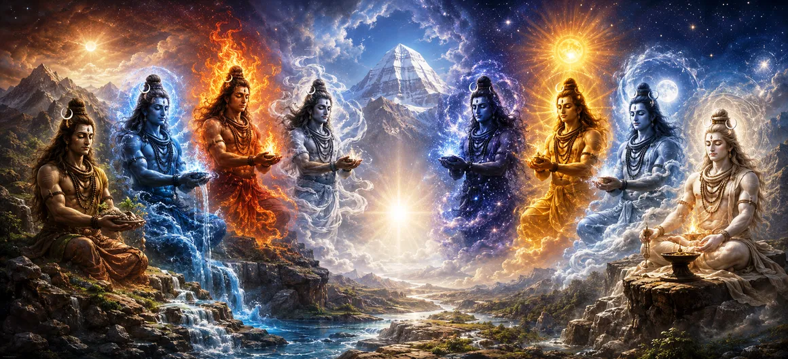

शिव के आठ रूप
शतरुद्र संहिता की गहन खोज को जारी रखते हुए, दूसरा अध्याय शिवाष्टमूर्ति की शानदार अवधारणा को उजागर करता है - आठ भौतिक और तात्विक रूप जिनके माध्यम से भगवान शिव पूरे ब्रह्मांड में व्याप्त हैं और उसे बनाए रखते हैं।
शास्त्र विस्तार से बताता है कि कैसे सर्वोच्च भगवान सृष्टि से अलग नहीं है, बल्कि सीधे पृथ्वी, जल, अग्नि, वायु, आकाश, सूर्य, चंद्रमा और व्यक्तिगत आत्मा के रूप में प्रकट होता है, जो संपूर्ण ब्रह्मांडीय सद्भाव में सभी अस्तित्व को एक साथ रखता है।
इन आठ रूपों को समझने से भक्त को महादेव की सर्वव्यापी प्रकृति का एहसास गहरा हो जाता है, जिससे सामान्य धारणा आध्यात्मिक दृष्टि में बदल जाती है।
अध्याय 2 की मुख्य बातें
शिवाष्टमूर्ति सिद्धांत
भगवान शिव की आठ गुना भौतिक और तात्विक अभिव्यक्ति का अन्वेषण करता है।
भव और जल
भाव को सृष्टि को बनाए रखने वाले जीवन देने वाले जल तत्व के रूप में पहचानता है।
शर्वा और पृथ्वी
सर्व को सभी जीवित संरचनाओं का समर्थन करने वाले स्थिर पृथ्वी तत्व के रूप में प्रस्तुत किया गया है।
दिव्य ज्योतिर्मय
उग्र और भीम को समय और प्रकाश को नियंत्रित करने वाली सौर और चंद्र ऊर्जा के रूप में वर्णित किया गया है।
पशुपति और आत्मा
पशुपति को व्यक्तिगत आत्मा (जीव) का प्रतीक स्वामी बताया गया है।
सार्वभौमिक व्यापकता
यह स्थापित करता है कि ब्रह्मांड का प्रत्येक परमाणु शिव की ऊर्जा से कंपन करता है।
इस अध्याय में मुख्य विषय
अष्टांगिक स्वरूप का परिचय
शतरुद्र संहिता का अध्याय 2 शिवाष्टमूर्ति - भगवान शिव के आठ गुना अवतार - की अवधारणा को पेश करके पहले अध्याय में स्थापित ब्रह्माण्ड संबंधी ढांचे पर आधारित है।
ऋषियों ने सूत महर्षि से इस बारे में विस्तार से बताने के लिए कहा कि सर्वोच्च भगवान ब्रह्मांड के भौतिक तत्वों में कैसे व्याप्त हैं, जिससे इन सार्वभौमिक रूपों के आठ अलग-अलग नामों और कार्यों की विस्तृत व्याख्या हो सके।
यह शिक्षा स्थापित करती है कि प्रकृति स्वयं शिव का मूर्त शरीर है, जो प्रत्येक आध्यात्मिक साधक से गहरी श्रद्धा और पारिस्थितिक सद्भाव की मांग करती है।
भवः जल स्वरूप
आठ रूपों में से पहला है भाव, जो पानी के रूप में प्रकट होता है - महत्वपूर्ण तरल पदार्थ जो प्यास बुझाता है, फसलों को पोषण देता है, और दुनिया भर में सभी जैविक जीवन को बनाए रखता है।
जल शिव की बहती, अनुकूलनीय और जीवनदायी कृपा का प्रतिनिधित्व करता है, जो शारीरिक और आध्यात्मिक दोनों तरह से अशुद्धियों को साफ करता है।
भाव की पूजा भक्तों को जल स्रोतों का सम्मान करने और सभी प्राकृतिक घटनाओं में दिव्य तरलता को पहचानने की याद दिलाती है।
शर्व: पृथ्वी रूप
शर्वा दूसरे रूप का प्रतिनिधित्व करता है, जो स्थिर पृथ्वी के रूप में प्रकट होता है जो पहाड़ों, जंगलों, शहरों का समर्थन करता है, और सभी सांसारिक अस्तित्व के लिए एक मजबूत आधार प्रदान करता है।
पृथ्वी के रूप में, शिव अनंत धैर्य और बिना शर्त सहनशक्ति के साथ सभी प्राणियों का भारी वजन सहन करते हैं।
सर्व का चिंतन करने से ज़मीनीपन, स्थिरता और धरती माता के प्रति गहरा सम्मान बढ़ता है।
ईशान: आकाश रूप
तीसरा रूप ईशान है, जो सर्वव्यापी ईथर या आकाश (आकाश) का प्रतीक है जो ब्रह्मांड के भीतर प्रत्येक वस्तु और बल को समायोजित करता है।
ईथर निराकार है फिर भी इसमें सभी रूप समाहित हैं, यह सूक्ष्म माध्यम के रूप में कार्य करता है जिसके माध्यम से ध्वनि और ऊर्जा ब्रह्मांड में यात्रा करती है।
ईशान पर ईथर के रूप में ध्यान करने से मन को भौतिक सीमाओं से परे अनंत चेतना में विस्तार करने में मदद मिलती है।
पशुपति: आत्मा रूप
पशुपति चौथे रूप का प्रतिनिधित्व करता है, जो सांसारिक लगाव में फंसी व्यक्तिगत आत्मा (जीव) का प्रतीक है, जिसमें शिव दयालु स्वामी (पशुपति) के रूप में सेवा करते हैं जो आत्माओं को मुक्त करते हैं।
यह रूप इस बात पर जोर देता है कि परमात्मा प्रत्येक जीवित प्राणी के भीतर आंतरिक साक्षी और सच्चे आत्म के रूप में निवास करता है।
पशुपति का एहसास साधकों को पशुवत आवेगों को तोड़ने और उनकी उच्च आध्यात्मिक क्षमता को जागृत करने में मदद करता है।
उग्रा: पवन रूप
पांचवां रूप उग्र है, जो गतिशील हवा (वायु) के रूप में प्रकट होता है जो सभी प्राणियों में जीवन फूंकता है, बादलों को चलाता है और वातावरण को सक्रिय करता है।
हवा ब्रह्मांड की अजेय, अदृश्य सांस का प्रतिनिधित्व करती है, सुगंध लाती है और वायुमंडलीय संतुलन बनाए रखती है।
उग्र की पूजा करने से साधक की महत्वपूर्ण जीवन शक्ति (प्राण) सार्वभौमिक ऊर्जा के साथ संरेखित हो जाती है।
रुद्र: अग्नि रूप
रुद्र छठे रूप का प्रतिनिधित्व करता है, जो पवित्र अग्नि (अग्नि) के रूप में प्रकट होता है जो गर्मी प्रदान करता है, भोजन पचाता है, यज्ञों को शक्ति प्रदान करता है और अंधकार को प्रकाशित करता है।
अग्नि सृष्टि को शुद्ध करने वाली, अशुद्धियों को जलाने वाली और आहुतियों को दिव्य लोकों तक ले जाने वाली एजेंट है।
रुद्र का चिंतन करने से आध्यात्मिक ज्ञान और तपस्या की आंतरिक अग्नि प्रज्वलित होती है।
भीम: सूर्य रूप
सातवां रूप भीम है, जो तेजस्वी सूर्य के रूप में प्रकट होता है जो रात को दूर भगाता है, समय को नियंत्रित करता है और सभी जीवित चीजों को प्रकाश और ऊर्जा प्रदान करता है।
सूर्य ग्रह की जैविक लय को बनाए रखता है और ब्रह्मांडीय व्यवस्था की चमकती आंख का प्रतिनिधित्व करता है।
भीम की पूजा करने से साधक की बुद्धि में स्पष्टता, जीवन शक्ति और रोशनी आती है।
महादेव: चंद्रमा रूप
महादेव आठवें और अंतिम रूप का प्रतिनिधित्व करते हैं, जो शीतल, सुखदायक चंद्रमा (सोम) के रूप में प्रकट होते हैं जो पौधों को पोषण देता है, मन को शांत करता है और रात्रि लोक पर शासन करता है।
चंद्रमा अमृत, भावनात्मक संतुलन और शिव के सौम्य, दयालु पहलू का प्रतीक है जो थकी हुई आत्माओं को शांति देता है।
चंद्रमा के रूप में महादेव का ध्यान करने से मानसिक अशांति शांत होती है और हृदय दिव्य अमृत से भर जाता है।
आध्यात्मिक महत्व एवं पूजा
अध्याय 2 इस बात पर जोर देकर समाप्त होता है कि शिवाष्टमूर्ति की पूजा करना पूरे ब्रह्मांड की पूजा करने के बराबर है। चूँकि प्रकृति का प्रत्येक तत्व शिव का अंग है, इसलिए पारिस्थितिक विनाश या प्रकृति के प्रति अनादर को ईश्वर के विरुद्ध अपराध माना जाता है।
आध्यात्मिक जिज्ञासुओं से जल, पृथ्वी, वायु, अग्नि, अंतरिक्ष, सूर्य, चंद्रमा और जीवित आत्माओं को भगवान शिव की प्रत्यक्ष अभिव्यक्ति के रूप में मानते हुए, प्राकृतिक दुनिया को पवित्र विस्मय के साथ देखने का आग्रह किया जाता है।
अध्याय 2 की मुख्य शिक्षाएँ
प्रकृति देवत्व के रूप में
ब्रह्मांड के भौतिक तत्व भगवान शिव के मूर्त शरीर हैं।
भाव और शर्व
जल और पृथ्वी अस्तित्व के मूलभूत जीवन-निर्वाह स्तंभ हैं।
ऊर्जा एवं अंतरिक्ष
अग्नि, वायु और आकाश ब्रह्मांड की गतिशील गतिज शक्तियाँ प्रदान करते हैं।
ब्रह्मांडीय व्यवस्था
सूर्य और चंद्रमा सभी क्षेत्रों में समय, लय और भावनात्मक संतुलन को नियंत्रित करते हैं।
आंतरिक आत्मा
पशुपति दिव्य आलिंगन के भीतर आश्रय प्राप्त व्यक्तिगत आत्मा का प्रतिनिधित्व करता है।
पारिस्थितिक श्रद्धा
शिव की सच्ची भक्ति के लिए प्रकृति और समस्त जीवन के प्रति गहन सम्मान की आवश्यकता होती है।
आध्यात्मिक चिंतन
शतरुद्र संहिता का अध्याय 2 हमारे आसपास की दुनिया के साथ हमारे रिश्ते को बदल देता है। शिवाष्टमूर्ति - भव, सर्व, ईशान, पशुपति, उग्र, रुद्र, भीम और महादेव के आठ मौलिक रूपों - को प्रकट करके शास्त्र हमें सिखाता है कि भगवान शिव किसी दूर स्वर्ग में छिपे नहीं हैं, बल्कि हवा के माध्यम से सांस लेते हैं, सूरज में चमकते हैं, पानी में बहते हैं, हमें पृथ्वी के रूप में बनाए रखते हैं, और हमारे भीतर रहते हैं। आत्माएँ आंतरिक साक्षी के रूप में। यह गहन अहसास आध्यात्मिकता और पारिस्थितिकी के बीच की खाई को पाटता है, हमें सिखाता है कि प्रकृति में हम जो भी सांस लेते हैं वह महादेव के साथ एक अंतरंग संवाद है। जब हम तत्वों का सम्मान करते हैं, तो हम सर्वोच्च भगवान का सम्मान करते हैं।
अध्याय 2 का संदेश जीना
अध्याय 2 के संदेश को दैनिक जीवन में एकीकृत करने के लिए पर्यावरण के प्रति सचेत प्रबंधन की आवश्यकता है। जल को भाव के समान सम्मान दें, ऊर्जा का संरक्षण करें और पृथ्वी को सर्व के समान सम्मान दें, और महादेव की शीतल किरणों की तरह आंतरिक संतुलन बनाए रखें।
पहचानें कि प्रत्येक जीवित प्राणी में पशुपति की चिंगारी है, जो सभी प्राणियों के प्रति करुणा को बढ़ावा देती है। अपने कार्यों को प्राकृतिक ब्रह्मांडीय व्यवस्था के विरोध के बजाय उसके साथ सामंजस्य प्रदर्शित करने दें।
प्रमुख आध्यात्मिक अवधारणाएँ
भगवान शिव के आठ प्रकार के भौतिक और तात्विक रूप।
शिव का जल रूप जो जैविक जीवन का पोषण और पोषण करता है।
शिव का पार्थिव रूप अस्तित्व को स्थिरता और आधार प्रदान करता है।
ईथर या अंतरिक्ष रूप सभी ब्रह्मांडीय वस्तुओं और बलों को समायोजित करता है।
व्यक्तिगत आत्मा आंतरिक साक्षी और सच्चे स्व का प्रतीक है।
हवा और आग के रूप गतिशील सांस और शुद्ध करने वाली ऊर्जा का प्रतिनिधित्व करते हैं।
अध्याय सारांश
शतरुद्र संहिता अध्याय 2 शिवाष्टमूर्ति - भगवान शिव के आठ मौलिक और भौतिक रूपों - के गहन सिद्धांत को उजागर करता है। इसमें बताया गया है कि कैसे सर्वोच्च भगवान जल (भाव), पृथ्वी (सर्व), आकाश (ईशान), व्यक्तिगत आत्मा (पशुपति), वायु (उग्र), अग्नि (रुद्र), सूर्य (भीम), और चंद्रमा (महादेव) के रूप में प्रकट होते हैं। यह शिक्षा स्थापित करती है कि संपूर्ण ब्रह्मांड और सभी प्राकृतिक तत्व शिव के मूर्त शरीर हैं। इस सार्वभौमिक व्यापकता की व्याख्या करके, अध्याय गहरी पारिस्थितिक श्रद्धा और आध्यात्मिक एकता को प्रोत्साहित करता है, अध्याय 3 के लिए मंच तैयार करता है, जो भगवान शिव (अर्धनारीश्वर) के अद्भुत अर्ध-महिला अवतार की खोज करता है।
अक्सर पूछे जाने वाले प्रश्न
① शतरुद्र संहिता अध्याय 2 का प्राथमिक विषय क्या है?
प्राथमिक विषय में भगवान शिव के आठ विशिष्ट भौतिक और तात्विक रूपों को शामिल किया गया है, जिन्हें शिवाष्टमूर्ति के नाम से जाना जाता है, जो तत्वों और ब्रह्मांडीय शक्तियों का प्रतिनिधित्व करते हैं।
② शिवाष्टमूर्ति के आठ नाम क्या हैं?
आठ रूप हैं भाव, शर्व, ईशान, पशुपति, उग्र, रुद्र, भीम और महादेव, जो क्रमशः जल, पृथ्वी, आकाश, व्यक्तिगत आत्मा, वायु, अग्नि, सूर्य और चंद्रमा के स्वामी हैं।
③ ये आठ रूप प्रकृति में कैसे प्रकट होते हैं?
वे मूलभूत तत्वों और खगोलीय पिंडों के माध्यम से प्रकट होते हैं जो भौतिक ब्रह्मांड और सभी जीवित अस्तित्व को बनाए रखते हैं।
④ शिव पुराण में अष्टमूर्ति की अवधारणा क्यों महत्वपूर्ण है?
यह दर्शाता है कि भगवान शिव ब्रह्मांड से अलग नहीं हैं, बल्कि भौतिक और आध्यात्मिक रूप से ब्रह्मांड के हर पहलू में व्याप्त हैं।
⑤आठ रूपों का ध्यान करने से साधक को क्या लाभ होता है?
यह अभ्यासकर्ता को प्राकृतिक शक्तियों के साथ सामंजस्य स्थापित करता है, गहरी पारिस्थितिक श्रद्धा को बढ़ावा देता है और आध्यात्मिक अनुभूति की ओर ले जाता है।
⑥ अध्याय 2 अध्याय 3 से कैसे जुड़ता है?
अध्याय 2 अपने आठ मौलिक रूपों के माध्यम से शिव की सार्वभौमिक उपस्थिति स्थापित करता है, जबकि अध्याय 3 चमत्कारिक अर्ध-महिला अवतार (अर्धनारीश्वर) में परिवर्तित होता है।
"जल, पृथ्वी, वायु, अग्नि, आकाश, सूर्य, चंद्रमा और आत्मा - इन आठ रूपों में, भगवान शिव पूरे ब्रह्मांड में व्याप्त हैं और उसे गले लगाते हैं।"
शतरुद्र संहिता के माध्यम से जारी रखें
अध्याय 2 में शिव के आठ मौलिक और भौतिक रूपों (शिवष्टमूर्ति) का विवरण दिया गया है। भगवान शिव के दिव्य अर्ध-नारीश्वर अवतार (अर्धनारीश्वर) का पता लगाने के लिए अध्याय 3 को जारी रखें।